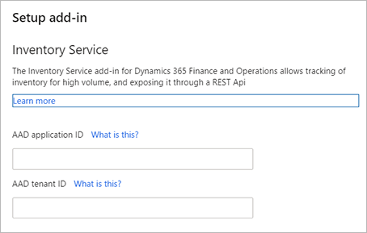

Inventory Visibility Add-in
Important
Some or all of the functionality noted in this topic is available as part of a preview release. The content and the functionality are subject to change. For more information about preview releases, see One version service updates FAQ.
The Inventory Visibility Add-in is an independent and highly scalable microservice that enables real-time on-hand inventory tracking, thus providing a global view of inventory visibility.
All information that relates to on-hand inventory is exported to the service in near real-time through low-level SQL integration. External systems access the service through RESTful APIs to query on-hand information on given sets of dimensions, thus retrieving a list of available on-hand positions.
Inventory Visibility is a microservice built on Microsoft Dataverse, which means you can extend it by building Power Apps and applying Power BI to provide customized functionality to meet your business requirements. It is also possible to upgrade the index to do inventory queries.
Inventory Visibility provides configuration options that let it integrate with multiple third-party systems. It supports the standardized inventory dimension, customized extensibility, and standardized, configurable calculated quantities.
This topic describes how to install and configure the Inventory Visibility Add-in for Dynamics 365 Supply Chain Management, and how to use its application programming interface (API).
Install the Inventory Visibility Add-in
You need to install the Inventory Visibility Add-in using Microsoft Dynamics Lifecycle Services (LCS). LCS is a collaboration portal that provides an environment and a set of regularly updated services that help you manage the application lifecycle of your Dynamics 365 Finance and Operations apps.
For more information, see Lifecycle Services resources.
Prerequisites
Before you install the Inventory Visibility Add-in, you must do the following:
- Obtain an LCS implementation project with at least one environment deployed.
- Generate the beta keys for your offering in LCS.
- Enable the beta keys for your offering for your user in LCS.
- Contact the Microsoft Inventory Visibility product team and provide an environment ID where you want to deploy the Inventory Visibility Add-in.
If you have any questions about these prerequisites, please contact the Inventory Visibility product team.
Install the add-in
To install the Inventory Visibility Add-in, do the following:
Sign in to the Lifecycle Services (LCS) portal.
On the home page, select the project where your environment is deployed.
On the project page, select the environment where you want to install the add-in.
On the environment page, scroll down until you see the Environment add-ins section. If the section isn't visible, make sure the prerequisite beta keys have been fully processed.
In the Environment add-ins section, select Install a new add-in.

Select the Install a new add-in link. A list of available add-ins opens.
Select Inventory service from the list. (Note, this may now be listed as Inventory Visibility Add-in for Dynamics 365 Supply Chain Management.)
Enter values for the following fields for your environment:
- AAD application ID
- AAD tenant ID

Agree to the terms and condition by selecting the Terms and conditions check box.
Select Install. The status of the add-in will show as Installing. When it's done, refresh the page to see the status change to Installed.
Get a security service token
Get a security service token by doing the following:
Sign in to Azure Portal and use it to find the
clientIdandclientSecretfor your Supply Chain Management application.Fetch an Azure Active Directory token (
aadToken) by submitting an HTTP request with the following properties:URL -
https://login.microsoftonline.com/${aadTenantId}/oauth2/tokenMethod -
GETBody content (form data):
key value client_id ${aadAppId} client_secret ${aadAppSecret} grant_type client_credentials resource 0cdb527f-a8d1-4bf8-9436-b352c68682b2
You should receive an
aadTokenin response, which resembles the following example.{ "token_type": "Bearer", "expires_in": "3599", "ext_expires_in": "3599", "expires_on": "1610466645", "not_before": "1610462745", "resource": "0cdb527f-a8d1-4bf8-9436-b352c68682b2", "access_token": "eyJ0eX...8WQ" }Formulate a JSON request that resembles the following:
{ "grant_type": "client_credentials", "client_assertion_type":"aad_app", "client_assertion": "{Your_AADToken}", "scope":"https://inventoryservice.operations365.dynamics.com/.default", "context": "5dbf6cc8-255e-4de2-8a25-2101cd5649b4", "context_type": "finops-env" }Where:
- The
client_assertionvalue must be theaadTokenyou received in the previous step. - The
contextvalue must be the environment ID where you want to deploy the add-in. - Set all of other values as shown in the example.
- The
Submit an HTTP request with the following properties:
- URL -
https://securityservice.operations365.dynamics.com/token - Method -
POST - HTTP header - Include the API version (key is
Api-Versionand value is1.0) - Body content - Include the JSON request that you created in the previous step.
- URL -
You will get an
access_tokenin response. This is what you need as a bearer token to call the Inventory Visibility API. Here is an example.{ "access_token": "{Returned_Token}", "token_type": "bearer", "expires_in": 1200 }
Uninstall the add-in
To uninstall the add-in, select Uninstall. Refresh LCS and the Inventory Visibility Add-in will be removed. The uninstall process will remove the add-in registration and also start a job to clean up all of the business data stored in the service.
Inventory Visibility Add-in public API
The public REST API of the of the Inventory Visibility Add-in presents several specific endpoints of integration. It supports three main interaction types:
- Posting on-hand changes to the add-in from an external system.
- Querying current on-hand quantities from an external system.
- Automatic synchronization with Supply Chain Management on-hand.
The automatic synchronization isn't part of the public API but is instead handled in the background for environments that have enabled the Inventory Visibility Add-in.
Authentication
The platform security token is used to call the Inventory Visibility Add-in, so you must generate an Azure Active Directory token using your Azure Active Directory application.
For more information about how to get the security token, see Install the Inventory Visibility Add-in.
Configure the Inventory Visibility API
Before using the service, you must complete the configurations described in the following subsections. The configuration may vary based on the details of your environment. It primarily includes four parts:
Partitioning
Partitioning can significantly influence the performance of the Inventory Visibility API. It's a good idea to define a scheme that allows for small groupings of data while still allowing for meaningful data queries.
The organizationId (dataAreaId in Supply Chain Management) will always be part of the partitioning, and by default Inventory Visibility is set to partition by dimensions as Site + Location. This means that the service must always be queried with these dimensions defined on the filters.
Note
Site and Location are two general default dimensions in Inventory Visibility. In Supply Chain Management, those dimensions are called Site (InventSiteId) and Warehouse (InventLocationId)
Dimension configurations
Inventory Visibility will provide a list of general default dimensions to enable the multiple source system integration.
The following table lists the inventory dimensions that will be the default dimension names in Inventory Visibility.
| Dimension type | Dimension name |
|---|---|
| Product | ColorId |
| Product | SizeId |
| Product | StyleId |
| Product | ConfigId |
| Tracking | BatchId |
| Tracking | SerialId |
| Location | LocationId |
| Location | SiteId |
| Inventory Status | StatusId |
| Warehouse Specific | WMSLocationId |
| Warehouse Specific | WMSPalletId |
| Warehouse Specific | LicensePlateId |
Note
The dimension type listed in the previous table is for reference only. You don't need to define the dimension type in Inventory Visibility.
If a custom dimension exists and needs to flow to a default value when consumed by Inventory Visibility, you can configure the Custom dimension name in Inventory Visibility.
External systems access Inventory Visibility through RESTful APIs that enable on-hand information on given sets of dimensions to be queried. For the integration, Inventory Visibility enables you to configure the external channel data source and the source dimension to the target dimensions in Inventory Visibility.
The target dimensions should be one of the following:
- Default dimensions in Inventory Visibility
- Custom dimensions
The purpose of dimension configuration is to standardize the multi-system integration for the query on dimensions and the posting event with dimensions.
Indexing
Most of the time, the inventory on-hand query will not only be on the highest "total" level, but you may want to see results aggregated based on the inventory dimensions.
Inventory Visibility provides flexibility by allowing you to set up the indexes, which are based on the dimension or the combination of the dimensions.
Note
Currently, you can only configure indexes to a maximum of five. You need to carefully consider which dimension or dimension combination you will use before the implementation to ensure that it will meet your business needs. For example, if you want to query products as follows:
- Query the aggregated product on-hand by the Color and Size dimensions.
- In some cases, you just want to query on the product in total.
You would have two indexes defined as the following:
["ColorId", "SizeId"][]
The empty bracket will aggregate based on the product ID within the partition.
The indexing defines how you can group your results based on the groupBy query setting. In this case if you don't define any groupBy values, you'll get totals by productid. Otherwise if you define groupBy as groupBy=ColorId&groupBy=SizeId, you'll get multiple lines returned, based on the different color and size combinations in the system.
You can put your query criteria in the request body.
Here is a sample query on the product with color and size combination.
{
"filters": {
"OrganizationId": ["usmf"],
"ProductId": ["MyProduct"],
"LocationId": ["21"],
"SiteId": ["2"],
"ColorId": ["Red"]
},
"groupByValues": [
"SizeId",
"ColorId"
],
"returnNegative": true
}
Custom measurement
The default measurement quantities are linked to Supply Chain Management, however you may want to have a quantity that is made up of a combination of the default measurements. To do this, you can have a configuration of custom quantities, which will be added to the output of the on-hand queries.
The functionality simply allows you to define a set of measures that will be added, and/or a set of measures that will be subtracted, in order to form the custom measurement.
For example, with the following query condition, you will configure the custom measurement quantity as MyCustomAvailableforReservation to be consumed by the consumption system.
[
{
"productId": "MyProduct",
"dimensions": {
"colorid": "Red"
},
"quantities": {
"mypos": {
"outbound": 20.0,
"inbound": 80.0
},
"fno": {
"availphysical": 100.0,
"orderedintotal": 50.0,
"orderedreserved": 10.0
},
"exterchannel": {
"received": 90.0,
"scheduled": 30.0,
"issued": 60.0,
"reserved": 40.0
}
}
}
]
| Consumption system | Calculated measurers | Data source | Modifier | Modifier calculation type |
|---|---|---|---|---|
CustomChannel |
MyCustomAvailableforReservation |
fno |
availphysical |
Addition |
CustomChannel |
MyCustomAvailableforReservation |
fno |
orderedintotal |
Addition |
CustomChannel |
MyCustomAvailableforReservation |
fno |
orderedreserved |
Subtraction |
CustomChannel |
MyCustomAvailableforReservation |
mypos |
inbound |
Addition |
CustomChannel |
MyCustomAvailableforReservation |
mypos |
outbound |
Subtraction |
CustomChannel |
MyCustomAvailableforReservation |
exterchannel |
received |
Addition |
CustomChannel |
MyCustomAvailableforReservation |
exterchannel |
scheduled |
Addition |
CustomChannel |
MyCustomAvailableforReservation |
exterchannel |
issued |
Subtraction |
CustomChannel |
MyCustomAvailableforReservation |
exterchannel |
reserved |
Subtraction |
With that, the query on the custom measurement quantity will return the following output.
[
{
"productId": "MyProduct",
"dimensions": {
"colorid": "Red"
},
"quantities": {
"mypos": {
"outbound": 20.0,
"inbound": 80.0
},
"fno": {
"availphysical": 100.0,
"orderedintotal": 50.0,
"orderedreserved": 10.0
},
"exterchannel": {
"received": 90.0,
"scheduled": 30.0,
"issued": 60.0,
"reserved": 40.0
},
"CustomChannel": {
"MyCustomAvailableforReservation": 220.0
}
}
}
]
The MyCustomAvailableforReservation output is based on the calculation setting in the custom measurements as:
100 + 50 + 80 + 90 + 30 – 10 – 20 – 60 – 40 = 220
Posting on-hand changes
The exact URL that the event will be posted to will depend on your geographical region. It will take the form:
https://{serviceURL}/api/environment/{environmentId}/onhand
When authenticated, this URL can be used along with the HTTP POST method to send on-hand change events to the service.
A special header is used for communicating with Dynamics 365 services through HTTP requests, denoting the environment ID of the Supply Chain Management instance the data is linked to. For example:
x-ms-environment-id: 2db79622-f97a-4d64-9844-d12efed41796
Posting on-hand changes query example 1
This example shows a scenario where you will set up the dimension configuration in Power Apps.
Use the following query to configure the dimension mapping in Power Apps:
{
"PosSizeId": "SizeId",
"PosColorId": "ColorId",
"PosSiteId": "SiteId",
"PosLocationId": "LocationId"
}
Now you can specify the dimensionDataSource and use custom dimensions in your queries. The system will automatically convert custom dimensions to base dimensions.
{
"id": "demo-test-00007",
"organizationId": "usmf",
"productId": "MyProduct",
"quantities": {
"pos": {
"Outbound": 1
}
},
"dimensionDataSource": "pos",
"dimensions": {
"PosSizeId": "Large",
"PosColorId": "Red",
"PosSiteId": "2",
"PosLocationId": "21"
}
}
Posting on-hand changes query example 2
This example shows a scenario where no mappings are set up for the dimension configuration in Power Apps, so the posting should also use the base dimensions. All dimensions must be base dimensions when the dimensionDataSource field is null, empty, or whitespace.
{
"id": "demo-test-00007",
"organizationId": "usmf",
"productId": "MyProduct",
"quantities": {
"pos": {
"Outbound": 1
}
},
"dimensions": {
"SizeId": "Large",
"ColorId": "Red",
"SiteId": "2",
"LocationId": "21"
}
}
JSON document field properties
The fields from the JSON query examples provided previously have the properties listed in the following table.
| Field ID | Description |
|---|---|
id |
A unique ID for the specific change event. This ID is used to ensure that if communication with the service fails during posting, resubmitting the event would not result in the same event being counted twice in the system. |
organizationId |
The identifier of the organization linked to the event. This maps to Supply Chain Management organizations or data area IDs. |
productId |
The identifier of the product in question. |
quantity |
The quantity by which the on-hand needs to be changed. If, for instance, 10 new bagels were added to a shelf, this value would be 10. If 3 bagels were then removed from the shelf or sold, this value would be -3. |
dimensionDataSource |
The data source of the dimensions used in the posting change event and query. If you specify the data source, you can use the custom dimensions from the specified data source. With the dimension configuration, Inventory Visibility can map the custom dimensions to the general default dimensions. If the dimensionDataSource is not specified, you can only use the general default dimensions in your queries. |
dimensions |
A dynamic bag of key/value pairs. These will map to some of the dimensions in Supply Chain Management, but you could also add custom dimensions (like Source) that may denote if the event was coming from Supply Chain Management or an external system. |
Querying current on-hand
The endpoint for querying the current on-hand will have a similar URL:
https://{serviceURL}/api/environment/{environmentId}/onhand/indexquery
It will be queried with the HTTP POST method.
Current on-hand query example 1
This example shows a scenario where you have already completed the dimension configuration in Power Apps.
Use the following query to configure the dimension mapping in Power Apps:
{
"PosSizeId": "SizeId",
"PosColorId": "ColorId",
"PosSiteId": "SiteId",
"PosLocationId": "LocationId"
}
Now you can specify the dimensionDataSource and use custom dimensions in your queries. The system will automatically convert custom dimensions to base dimensions. You can specify the DimensionDataSource in filters and specify custom dimensions in both filters and groupByValues. The system will automatically convert custom dimensions to base dimensions.
{
"filters": {
"OrganizationId": ["usmf"],
"ProductId": ["MyProduct"],
"DimensionDataSource": ["Pos"],
"PosLocationId": ["21"],
"PosSiteId": ["2"],
"PosColorId": ["Red"]
},
"groupByValues": [
"PosSizeId",
"PosColorId"
],
"returnNegative": true
}
Current on-hand query example 2
This example shows a scenario where no mappings are set up for the dimension configuration in Power Apps, so the posting should also use the base dimensions. All dimensions must be base dimensions when the dimensionDataSource field, under filters is null, empty, or whitespace.
{
"filters": {
"OrganizationId": ["usmf"],
"ProductId": ["MyProduct"],
"LocationId": ["21"],
"SiteId": ["2"],
"ColorId": ["Red"]
},
"groupByValues": [
"SizeId",
"ColorId"
],
"returnNegative": true
}
Example return result
The queries shown in the previous examples could return a result like this.
[
{
"productId": "MyProduct",
"dimensions": {
"colorid": "Red"
},
"quantities": {
"mypos": {
"outbound": 20.0,
"inbound": 80.0
},
"fno": {
"availphysical": 100.0,
"orderedintotal": 50.0,
"orderedreserved": 10.0
},
"exterchannel": {
"received": 90.0,
"scheduled": 30.0,
"issued": 60.0,
"reserved": 40.0
},
"CustomChannel": {
"MyCustomAvailableforReservation": 220.0
}
}
}
]
Note that the quantities fields are structured as a dictionary of measures and their associated values.